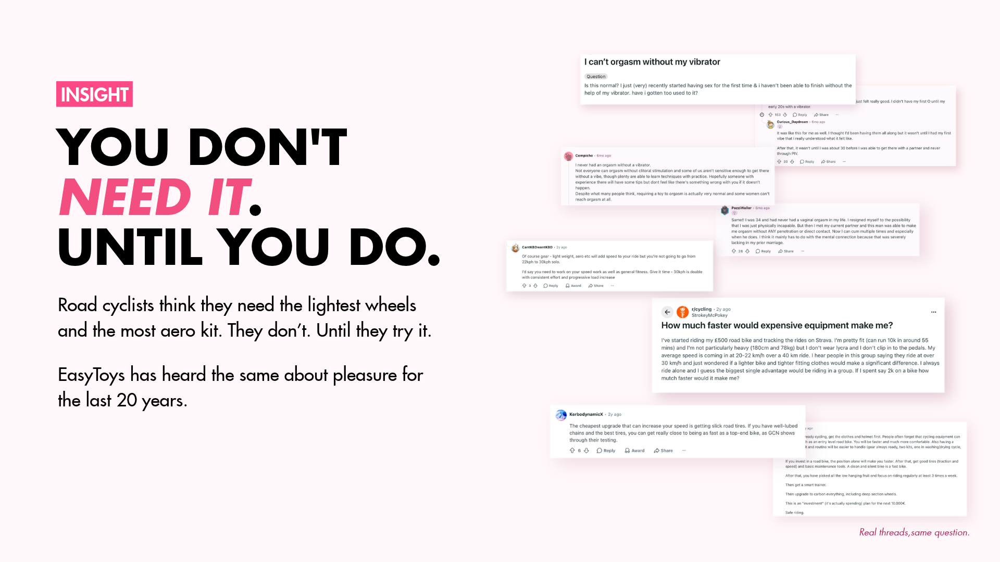
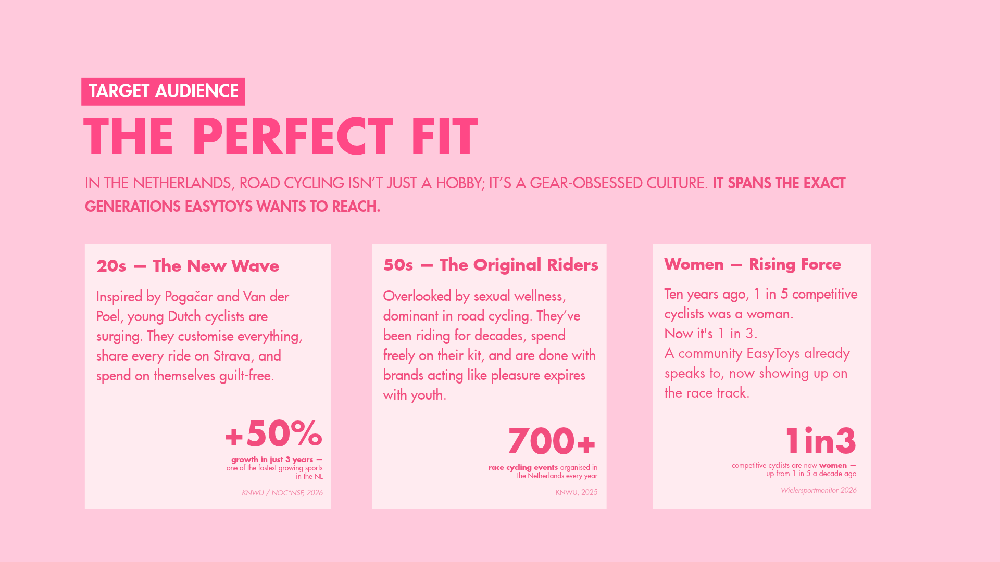
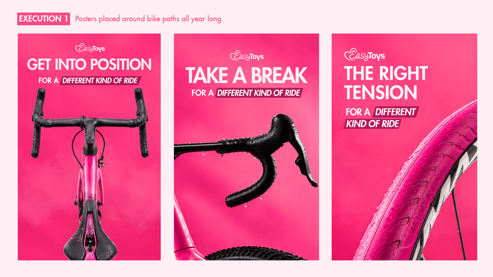
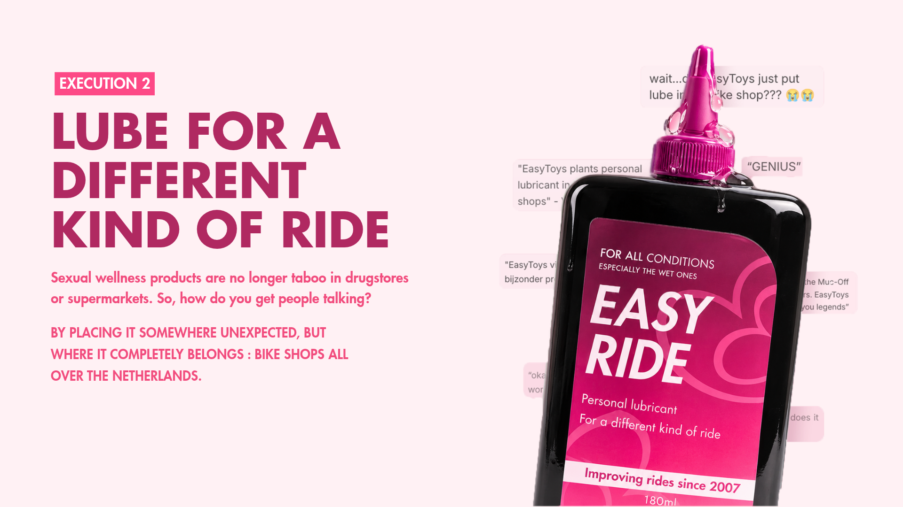

strategy + concept + design
EasyRide — EasyToys x Young Dogs
What do road cycling and EasyToys have in common?


strategy + concept + design
What do road cycling and EasyToys have in common?
But first, how do you celebrate a brand’s birthday when you can’t show or name its products?You tap into a subculture that already speaks the same language: road cycling.
Road cyclists have their own rituals, their own vocabulary, and an obsession with improving the ride.Nobody settles for second-best. Your pleasure deserves the same.

The insight

Target audience

Poster series placed along bike paths

A 20th-anniversary lube, placed in bike shops
Project made with Liesbeth